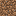

Creating armor
Three cases: normal armor, armor with trims and shield. The background works the same way; only the template and model arguments change.
Armor
For armor with a 2D icon, use armor_generated:
items:
custom_tiers:my_helmet:
material: iron_helmet
template:
- custom_tiers:tiers
arguments:
type: armor_generated
tiers: 3
display: rare
icon_path: minecraft:item/iron_helmet
icon_path is the 2D icon texture. If you use 3D armor, configure its
settings.equipment like any other CraftEngine item.
Armor with trims
For trims, also add the custom_tiers:asset_id template and the
material, part and asset_id arguments:
items:
custom_tiers:my_trimmed_helmet:
material: copper_helmet
template:
- custom_tiers:tiers
- custom_tiers:asset_id
arguments:
type: trim_armor_generated
tiers: 3
display: rare
icon_path: minecraft:item/custom/topaz_helmet
material: topaz
part: helmet
asset_id: default:topazmaterialis the trim material, without a namespace.part:helmet,chestplate,leggingsorboots.asset_idis the equipment asset.
Shield
The shield uses a normal model and a blocking model. It is not a separate item: the change is resolved
with minecraft:using_item.
items:
custom_tiers:my_shield:
material: shield
template:
- custom_tiers:tiers
arguments:
type: model_path_shield
tiers: 3
display: rare
model_path: custom_tiers:item/shield
model_path_blocking: custom_tiers:item/shield_blocking
icon: custom_tiers:item/shield_iconShield states:

model_path_blocking is optional: if omitted, model_path is used
while blocking. icon is also optional; it defaults to
minecraft:item/shield.
This template does not render banner patterns. The shield is a fixed normal model and its blocking version.
End of the guide. You can go back to the home page or review the arguments.